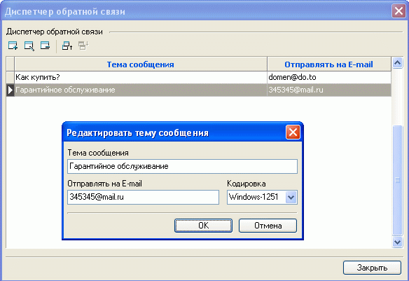
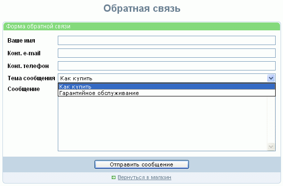

Для обеспечения возможности отправить электронное сообщение, но при этом скрыть истинный адрес E-mail, может быть создана отдельная страница, именуемая "Диспетчером обратной связи". Эта страница относится к числу стандартных страниц, на которые в настройках свойств раздела может быть организована ссылка из главного меню, как правило в нее заносят типовые темы сообщений.
Для задания этих типовых тем и сопоставления их конкретным адресам E-mail, на которые будут отправляться письма соответствующей тематики, из главного окна программы Melbis Shop меню "Заказы и покупатели - Диспетчер обратной связи" можно вызвать окно Диспетчера. Диспетчер позволяет просмотреть существующие связи, а также добавить, отредактировать или удалить тему сообщения и соответствующий этой теме адрес E-mail, указать кодировку отправляемых на этот почтовый ящик писем:

Указываемые здесь адреса не будут доступны для обозрения и определения посетителями сайта:

Если в диспетчере не будет задано ни одной темы, все сообщения будут отсылаться по одному электронному адресу, указанному в общих настройках магазина как "E-mail администратора".